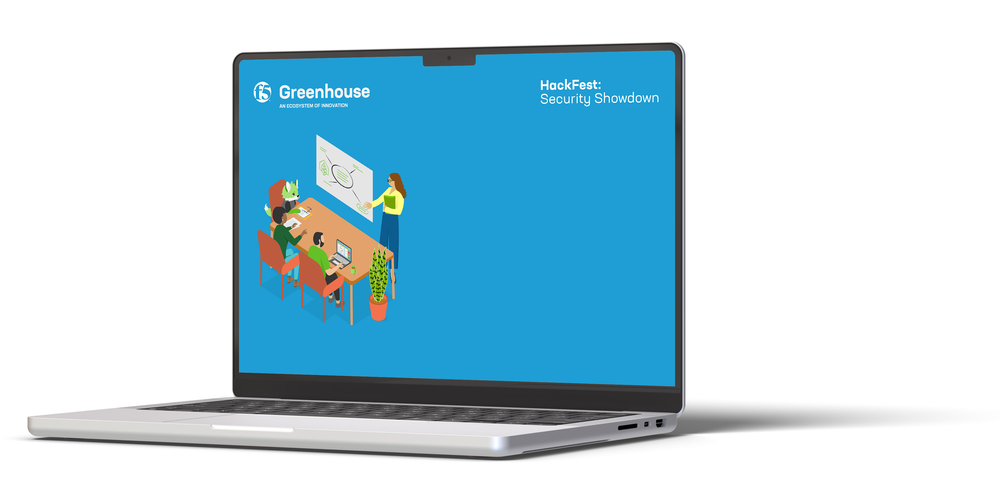

Innovation is my passion, and I thrive on bringing ideas to life.
I’ve built programs that spark creativity and drive impact. These initiatives fuel my love for innovation and
creating meaningful change.
Greenhouse
Greenhouse is F5’s first open innovation hub, designed to inspire creativity, collaboration, and
transformative solutions. It connects employees across the globe, providing tools, events, and a structured
framework to turn ideas into impactful outcomes, from ideation to implementation.
Duration
May 2022 - April 2024
Role
Sr. Technical Program Manager
As a Sr. Technical Program Manager, I designed, launched, and scaled F5’s first open innovation hub, the
Greenhouse. I managed program strategy, organized global events, and developed resources like the Greenhouse
Toolkit to support employees in turning ideas into impactful projects.
Achievements
Organized 20+ global events, including hackathons and ideation workshops.
Grew F5’s innovation community to over 1,400 employees across 34 countries.
Strengthened regional capabilities by establishing local innovation hubs in India, Singapore, UAE, and more.
Led a team of 12 interns and 4 engineers to built the Greenhouse Toolkit, a comprehensive resource for
innovators.
Outcome
Empowered employees to deliver innovative solutions, driving global engagement and business impact.
Security Showdown HackFest

The Security Showdown HackFest was a six-week challenge where F5ers collaborated to create impactful security
solutions. It provided a platform for employees to ideate, develop, and showcase innovative ideas addressing key
security challenges.
Duration
Six weeks, from January 17 to February 28. Program planning began Nov 2022.
Role
Technical Program Manager
As Technical Program Manager, I designed, launched, and scaled F5’s first open innovation hub, the Greenhouse. I
managed program strategy, organized global events, and developed resources like the Greenhouse Toolkit to support
employees in turning ideas into impactful projects.
Achievements
Engaged 170+ participants from 14 countries, fostering global collaboration.
Secured involvement from 5 executuve sponsors, 13 judges, and 15 mentors, ensuring robust support for
participants.
Strengthened regional capabilities by establishing local innovation hubs in India, Singapore, UAE, and more.
Received 62 security project submissions, with 36 PoCs completed within six weeks.
36 high-quality security PoCs delivered, with 56% aligned to F5’s product portfolio and 32% generating new
technology ideas.
Enhanced cross-regional collaboration, with 63% of teams being multi-region and multi-country.
AI Gateway project identified during this event.
Outcome
Empowered employees to deliver innovative solutions, driving global engagement and business impact.
Generative AI IdeaFest
The Generative AI Ideafest was a two-month global event to explore and fast-track the use of Generative AI at F5. It offered training, collaboration, and a platform for F5ers to brainstorm and create actionable AI-driven ideas safely.
Duration
Two Months 2023
Role
Technical Program Manager
Achievements
Onboarded nearly 50% of the company with Generative AI training within six weeks
Aligned over 100 stakeholders including 24 speakers, 4 executive sponsors, and 7 judges within a 6 week delivery timeframe
Generated 79 well-defined ideas, complete with frameworks for assessing customer value, product alignment, and required resources.
Laid the groundwork for F5’s first-ever AI Program, driving AI adoption and innovation throughout the organization.
Outcome
Empowered employees to deliver innovative solutions, driving global engagement and business impact.